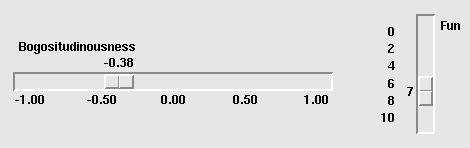

Виджет шкалы предназначен для того, чтобы позволить пользователю установить некоторое значение int или float в определенном диапазоне. Здесь представлены два виджета шкалы, горизонтальный и вертикальный:

Каждая шкала отображает ползунок (slider), который пользователь может перетаскивать вдоль желоба (trough), чтобы изменить значение. На рисунке первый ползунок сейчас находится на отметке -0,38, а второй - на отметке 7.
Вы можете перетащить ползунок на новое значение с помощью кнопки мыши 1.
Если вы нажмете кнопку 1 на желобе, ползунок будет перемещаться на один шаг в этом направлении за каждый щелчок. Если удерживать кнопку 1 в желобе, то после некоторой задержки начнется автоповтор.
Если шкала имеет [фокус клавиатуры] (focus.html), нажатия клавиш "стрелка влево" и "стрелка вверх" перемещают ползунок вверх (для вертикальных шкал) или влево (для горизонтальных шкал). Нажатия клавиш "стрелка вправо" и "стрелка вниз" перемещают ползунок вниз или вправо.
Чтобы создать новый виджет шкалы в качестве дочернего элемента корневого окна или фрейма с именем parent:
w = tk.Scale(parent, option, ...)
Конструктор возвращает новый виджет шкалы Scale. Опции:
Таблица 30. Опции виджета Scale
activebackground |
Цвет ползунка при наведении на него мыши. См. Раздел 5.3, "Цвета". |
bg или background |
Фоновый цвет части виджета, находящейся за пределами желоба. |
bd или borderwidth |
Ширина 3-мерной границы вокруг желоба и слайдера. По умолчанию - два пикселя. Допустимые значения см. в Раздел 5.1, "Размеры". |
command |
Процедура, которая будет вызываться при каждом перемещении ползунка. Этой процедуре будет передан один аргумент - новое значение масштаба. Если ползунок перемещается быстро, вы можете не получить обратный вызов для каждого возможного положения, но вы обязательно получите обратный вызов, когда он установится. |
cursor |
Курсор, который появляется при наведении мыши на шкалу. См. раздел Раздел 5.8, "Курсоры". |
digits |
Способ, которым ваша программа считывает текущее значение, отображаемое в виджете шкалы, - это управляющая переменная; смотрите Раздел 52, "Управляющие переменные: значения, скрывающиеся за виджетами". Управляющая переменная для шкалы может быть IntVar, DoubleVar (для типа float) или StringVar. Если это строковая переменная, параметр digits определяет, сколько цифр использовать при преобразовании числового значения шкалы в строку. |
font |
Шрифт, используемый для метки и аннотаций. См. раздел Раздел 5.4, "Шрифты". |
fg или foreground |
Цвет текста, используемого для метки и аннотаций. |
from_ |
Значение float, определяющее один конец диапазона шкалы. Для вертикальных шкал это верхний конец, для горизонтальных - левый. Подстрочный знак (_) не является опечаткой: поскольку from - зарезервированное слово в Python, эта опция пишется как from_. По умолчанию используется значение 0.0. Другой конец диапазона см. ниже в опции to. |
highlightbackground |
Цвет выделения фокуса, когда шкала не имеет фокуса. Смотрите Раздел 53, "Фокус: маршрутизация ввода с клавиатуры". |
highlightcolor |
Цвет подсветки фокуса, когда шкала имеет фокус. |
highlightthickness |
Толщина выделения фокуса. По умолчанию равна 1. Установите highlightthickness=0, чтобы подавить отображение подсветки фокуса. |
label |
Вы можете отобразить метку в виджете шкалы, установив этот параметр для текста метки. Метка отображается в левом верхнем углу, если шкала горизонтальная, или в правом верхнем углу, если вертикальная. По умолчанию метка отсутствует. |
length |
Длина виджета шкалы. Это размер X, если масштаб горизонтальный, или размер Y, если вертикальный. По умолчанию - 100 пикселей. Допустимые значения см. в Раздел 5.1, "Размеры". |
orient |
Установите orient=tk.HORIZONTAL, если вы хотите, чтобы шкала располагалась вдоль оси X, или orient=tk.VERTICAL, чтобы она располагалась параллельно оси Y. По умолчанию - вертикальная. |
relief |
При значении по умолчанию relief=tk.FLAT шкала не выделяется на общем фоне. Вы также можете использовать relief=tk.SOLID, чтобы получить сплошную черную рамку вокруг шкалы, или любой другой тип рельефа, описанный в Раздел 5.6, "Стили рельефа". |
repeatdelay |
Эта опция определяет, как долго нужно удерживать кнопку 1 в желобе, прежде чем ползунок начнет повторять движение в этом направлении. По умолчанию repeatdelay=300, а единицы измерения - миллисекунды. |
repeatinterval |
Эта опция управляет частотой перемещения ползунка после удержания кнопки 1 в желобе в течение не менее repeatdelay миллисекунд. Например, repeatinterval=100 будет перемещать ползунок каждые 100 миллисекунд. |
resolution |
Обычно пользователь может изменять значения только в целых единицах. Установите этот параметр в число, чтобы изменить наименьшее приращение значения шкалы. Например, если from_=-1.0 и to=1.0, и вы установите resolution=0.5, то шкала будет иметь 5 возможных значений: -1.0, -0.5, 0.0, +0.5 и +1.0. Все меньшие перемещения будут игнорироваться. Используйте resolution=-1, чтобы отключить любое округление значений. |
showvalue |
Обычно текущее значение шкалы отображается в текстовом виде рядом с ползунком (над ним для горизонтальных шкал, слева для вертикальных). Установите этот параметр в 0, чтобы отключить эту надпись. |
sliderlength |
Обычно ползунок занимает 30 пикселей по длине шкалы. Вы можете изменить эту длину, установив параметр sliderlength на желаемую длину; смотрите Раздел 5.1, "Размеры". |
sliderrelief |
По умолчанию ползунок отображается с рельефным стилем tk.RAISED. Для других стилей рельефа установите для этого параметра любое из значений, описанных в Раздел 5.6, "Стили рельефа". |
state |
Обычно виджеты шкалы реагируют на события мыши, а когда у них есть фокус, то и на события клавиатуры. Установите state=tk.DISABLED, чтобы сделать виджет не реагирующим. |
takefocus |
Обычно фокус циклически перемещается по виджетам шкалы. Установите этот параметр в 0, если вы не хотите такого поведения. Смотрите Раздел 53, "Фокус: маршрутизация ввода с клавиатуры". |
tickinterval |
Обычно на шкале не отображаются деления. Чтобы отображать периодические значения шкалы, установите этот параметр в число, и деления будут отображаться на кратных значениях. Например, если from_=0.0, to=1.0 и tickinterval=0.25, метки будут отображаться вдоль шкалы при значениях 0.0, 0.25, 0.50, 0.75 и 1.00. Эти метки отображаются под шкалой, если она горизонтальная, и слева от нее, если вертикальная. По умолчанию 0, что подавляет отображение делений. |
to |
Значение float, определяющее один конец диапазона шкалы; другой конец определяется опцией from_, о которой говорилось выше. Значение to может быть как больше, так и меньше значения from_. Для вертикальных шкал значение to определяет нижнюю часть шкалы; для горизонтальных шкал - правый конец. По умолчанию значение равно 100,0. |
troughcolor |
Цвет желоба. |
variable |
Управляющая переменная для данной шкалы, если таковая имеется; см. Раздел 52, "Управляющие переменные: значения, скрытые за виджетами". Управляющие переменные могут быть из класса IntVar, DoubleVar (для типа float) или StringVar. В последнем случае числовое значение будет преобразовано в строку. Более подробную информацию об этом преобразовании см. выше в описании опции digits. |
width |
Ширина желоба виджета. Это размер X для вертикальных масштабов и размер Y, если масштаб имеет orient=tk.HORIZONTAL. По умолчанию 15 пикселей. |
Для объектов Scale доступны следующие методы:
.coords(value=None)
Возвращает координаты относительно левого верхнего угла виджета, соответствующие заданному значению масштаба. Для
value=Noneвы получаете координаты центра ползунка в его текущем положении. Чтобы узнать, где бы находился ползунок, если бы значение шкалы было установлено на некоторое значениеx, используйтеvalue=x.
.get()
Этот метод возвращает текущее значение шкалы.
.identify(x, y)
При задании пары координат
(x, y)относительно левого верхнего угла виджета этот метод возвращает строку, идентифицирующую, какая функциональная часть виджета находится в этом месте. Возвращаемое значение может быть любым из этих:
'slider'Ползунок. 'trough1'Для горизонтальных шкал - слева от ползунка; для вертикальных шкал - над ползунком. 'trough2'Для горизонтальных шкал - справа от ползунка; для вертикальных шкал - ниже ползунка. ''Позиция (x, y)не находится ни на одной из вышеперечисленных частей.
.set(value)
Устанавливает значение шкалы.